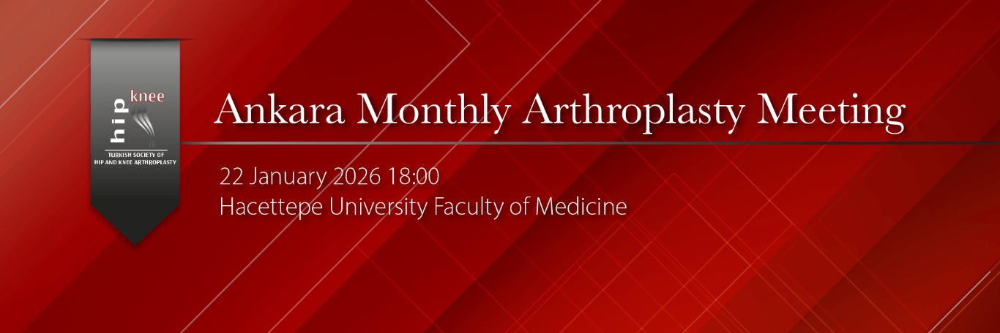

Dear Esteemed Professors and Colleagues,
As the Hip and Knee Arthroplasty Association, we are pleased to continue our Ankara Monthly Arthroplasty Meetings with the valuable participation of our colleagues, and we are delighted to announce our third meeting in this series.
Hosted by Hacettepe University, the meeting will be held on January 22, 2026, at 6:00 PM, and will focus on Total Knee Arthroplasty and Unicondylar Knee Arthroplasty. We will have the opportunity to hear these topics presented by our distinguished faculty members, Prof. Dr. Mazhar Tokgözoğlu and Prof. Dr. Turgay Çavuşoğlu.
The meeting will also include case discussions and article presentations. We warmly invite all colleagues who are interested in these topics to attend.
Kind regards,
Hip and Knee Arthroplasty Association
